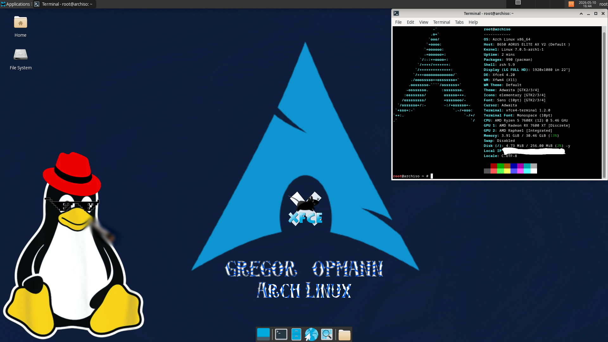

Built on Arch on Sunday. Refined over a very long Monday.
Download ISO
default.png. Automatic scripts were scrapped for stability.
Running Linux 7.0.5-arch1-1 for peak hardware compatibility.
Custom .zlogin configuration with scaled ASCII branding.
Tested on Ryzen 7000 series and RX 7000 series GPUs.